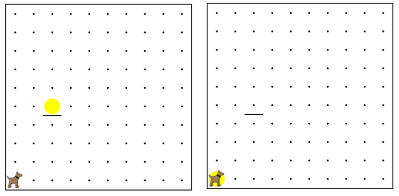

Karel starts off at the floor, but there is a ball up on a shelf.
You need Karel to go to fetch the ball and bring it back to the start.
卡雷爾在地板開始關閉，但有一個球上的架子。您需要卡雷爾去取回球，並把它回到起點。
Karel should end up on back at the beginning with a ball on (1,1).
卡雷爾應該結束了在上月初回來的（1,1）一球。
